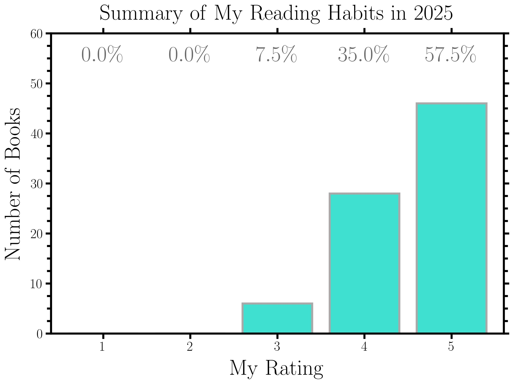
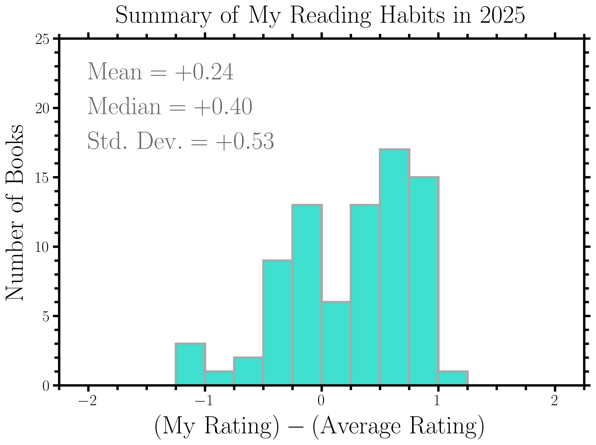
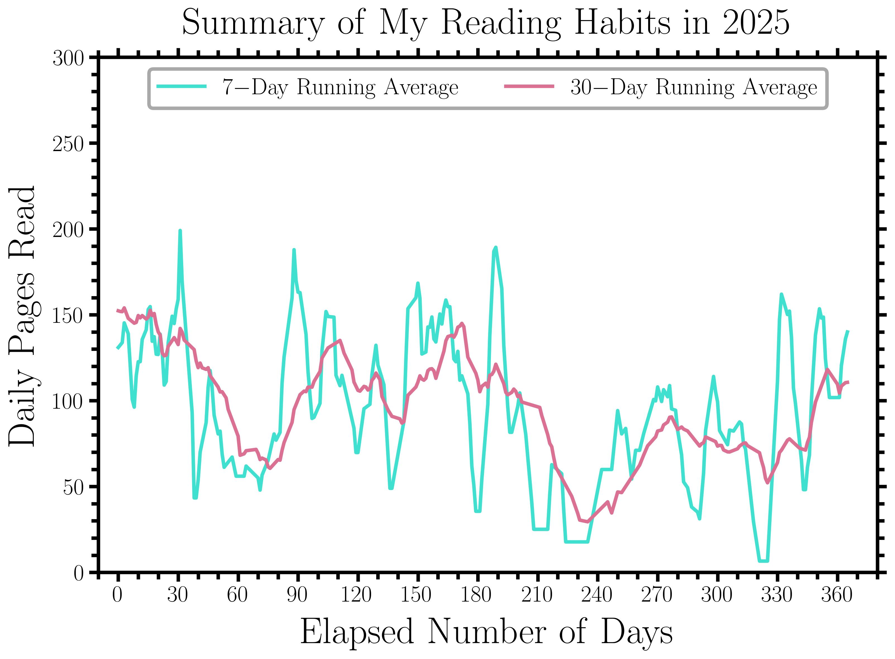
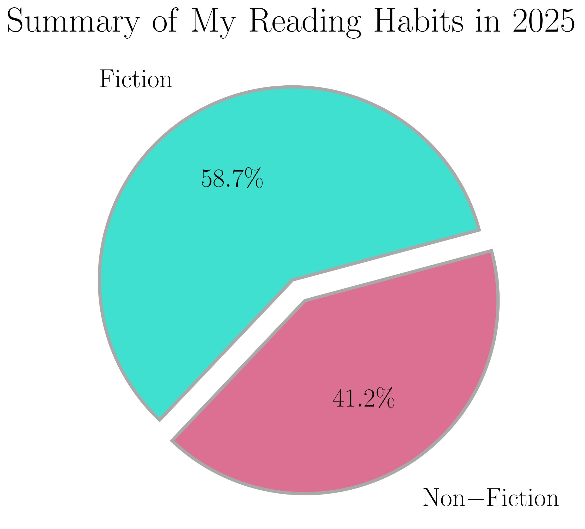

Blog
2025, A Year of Books in Review
January 2, 2026 · Review · Books · 2025
Link to My Year in Books on Goodreads.
I read lots of books in 2025 and tracked all of my progress on Goodreads. In this blog post, I will summarize the books that I read in 2025, starting with some infographics about my reading habits, followed by a ranked ordering of all the books that I read, and concluding with some of the best quotations from these books.
There are a few things I want to discuss prior to jumping into these topics though. Most notably, I approached reading differently in 2025 when compared to 2024. I was intentional about reading more non-fiction content; this includes books on Goodreads, but also content from Nature, National Geographic, and Scientific American. I estimated that I consumed roughly 200 pages per month in this additional content, which is not contained within My Year in Books on Goodreads. Additionally, I was more intentional in writing down quotations and my thoughts while reading each book; this helped with writing longer and more informative/thoughtful reviews. Finally, this blog post does not consider the many, many papers and proposals that I read for my academic work as an astrophysicist. If I had to make a rough guess, my professional work contributes another few hundred pages of content read per month.
With these thoughts in mind, let us look ahead and ask the question: How should I modify my reading habits in 2026?
- I want to read less non-fiction content and return to reading more classic, fictional literature.
- I want to spend less time writing down quotations since I was definitely overkill this year.
- I want to focus more on the number of pages read rather than the number of books.
Information Regarding My Reading Habits
In 2025, I read a total of 80 books from 49 unique authors. These 80 books contained a total of 31,345 pages, which suggests that my average book length was roughly 391.8 pages. For each of these 80 books, I provided a rating and wrote a review on Goodreads. I compiled the most relevant information for these 80 books in a Google spreadsheet. I subsequently analyzed my reading trends using the aforementioned spreadsheet and Python. My reading trends can be observed in the following infographics.




Ranked Ordering Of All The Books That I Read
- "The Divide: A Brief Guide to Global Inequality and its Solutions" by Jason Hickel
- "Project Hail Mary" by Andy Weir
- "Welcome to the Monkey House" by Kurt Vonnegut Jr.
- "What if We Get It Right?: Visions of Climate Futures" by Ayana Elizabeth Johnson
- "Our Universe: An Astronomer's Guide" by Jo Dunkley
- "The Fabric of the Cosmos: Space, Time, and the Texture of Reality" by Brian Greene
- "Flowers for Algernon" by Daniel Keyes
- "The Dispossessed" by Ursula K. Le Guin
- "The Hidden Reality: Parallel Universes and the Deep Laws of the Cosmos" by Brian Greene
- "Golden Son" by Pierce Brown
- "Leviathan Falls" by James S.A. Corey
- "The Science of Interstellar" by Kip Thorne
- "Red Rising" by Pierce Brown
- "The Physics of Climate Change" by Lawrence M. Krauss
- "21 Lessons for the 21st Century" by Yuval Noah Harari
- "The Hero of Ages" by Brandon Sanderson
- "What My Bones Know: A Memoir of Healing from Complex Trauma" by Stephanie Foo
- "Ender's Shadow" by Orson Scott Card
- "Evicted: Poverty and Profit in the American City" by Matthew Desmond
- "Homo Deus: A Brief History of Tomorrow" by Yuval Noah Harari
- "Inheritance" by Christopher Paolini
- "Tiamat's Wrath" by James S.A. Corey
- "Are Prisons Obsolete?" by Angela Y. Davis
- "The Project: How Project 2025 Is Reshaping America" by David A. Graham
- "The Dawn of Everything: A New History of Humanity" by David Graeber & David Wengrow
- "Persepolis Rising" by James S.A. Corey
- "Mistborn: The Final Empire" by Brandon Sanderson
- "The Hundred Years' War on Palestine: A History of Settler Colonialism and Resistance, 1917-2017" by Rashid Khalidi
- "The Way of Kings" by Brandon Sanderson
- "One Day, Everyone Will Have Always Been Against This" by Omar El Akkad
- "What If? 10th Anniversary Edition: Serious Scientific Answers to Absurd Hypothetical Questions" by Randall Munroe
- "The Well of Ascension" by Brandon Sanderson
- "Dawn" by Octavia E. Butler
- "The Martian Chronicles" by Ray Bradbury
- "Atomic Habits: An Easy & Proven Way to Build Good Habits & Break Bad Ones" by James Clear
- "Black Hole" by Charles Burns
- "The Butcher's Masquerade" by Matt Dinniman
- "The Dungeon Anarchist's Cookbook" by Matt Dinniman
- "The Little Prince" by Antoine de Saint-Exupéry
- "This Inevitable Ruin" by Matt Dinniman
- "The Gate of the Feral Gods" by Matt Dinniman
- "Babylon's Ashes" by James S.A. Corey
- "Let This Radicalize You" by Kelly Hayes & Mariame Kaba
- "Citizen: An American Lyric" by Claudia Rankine
- "Carl's Doomsday Scenario" by Matt Dinniman
- "The Eye of the Bedlam Bride" by Matt Dinniman
- "Exhalation" by Ted Chiang
- "The Bhagavad Gita" by Krishna-Dwaipayana Vyasa
- "The Illustrated Man" by Ray Bradbury
- "And Then There Were None" by Agatha Christie
- "System Collapse" by Martha Wells
- "How To: Absurd Scientific Advice for Common Real-World Problems" by Randall Munroe
- "Nexus" by Yuval Noah Harari
- "Slapstick, or Lonesome No More!" by Kurt Vonnegut Jr.
- "This Is How You Lose the Time War" by Amal El-Mohtar & Max Gladstone
- "Jailbird" by Kurt Vonnegut Jr.
- "Not Till We Are Lost" by Dennis E. Taylor
- "Maus: A Survivor's Tale I" by Art Spiegelman
- "A Grief Observed" by C.S. Lewis
- "Nemesis Games" by James S.A. Corey
- "Look at the Birdie: Short Fiction" by Kurt Vonnegut Jr.
- "Rendezvous with Rama" by Arthur C. Clarke
- "Galapagos" by Kurt Vonnegut Jr.
- "Fugitive Telemetry" by Martha Wells
- "Einstein" by Walter Isaacson
- "Living Well With OCD: Practical Strategies for Improving Your Daily Life" by Jonathan S. Abramowitz
- "Where the Sidewalk Ends" by Shel Silverstein
- "The Problem of Pain" by C.S. Lewis
- "Leonardo da Vinci" by Walter Isaacson
- "The Screwtape Letters" by C.S. Lewis
- "Vision of the Future" by Timothy Zahn
- "The Great Divorce" by C.S. Lewis
- "Four Thousand Weeks: Time Management for Mortals" by Oliver Burkeman
- "Specter of the Past" by Timothy Zahn
- "Miracles" by C.S. Lewis
- "Skeleton Crew" by Stephen King
- "Legends of Maui" by William Drake Westervelt
- "Hawaiian Legends of Volcanoes" by William Drake Westervelt
- "The Lottery and Other Stories" by Shirley Jackson
- "Murtagh" by Christopher Paolini
Some Of My Favorite Quotations From All These Books
-
"It is easy to assume that the divide between rich countries and poor countries has always existed; that it is a natural feature of the world. Indeed, the metaphor of the divide itself may lead us unwittingly to assume that there is a chasm — a fundamental discontinuity — between the rich world and the poor world, as if they were economic islands disconnected from one another. If you start from this notion, as many scholars have done, explaining the economic differences between the two is simply a matter of looking at internal characteristics... But the story is wrong. The idea of a natural divide misleads us from the start. In the year 1500, there was no appreciable difference in incomes and living standards between Europe and the rest of the world. Indeed, we know that people in some regions of the global South were a good deal better off than their counterparts in Europe. And yet their fortunes changed dramatically over the intervening centuries — not in spite of one another but because of one another — as Western powers roped the rest of the world into a single international economic system. When we approach it this way, the question becomes less about the traits of rich countries and poor countries — although that is, of course, part of it — and more about the relationship between them. The divide between rich countries and poor countries isn't natural or inevitable. It has been created. What could have caused one part of the world to rise and the other to fall? How has the pattern of growth and decline been maintained for more than 500 years? Why is inequality getting worse? And why do we not know about it?... At one of the most frightening times in our history, with inequality at record extremes, demagogues rising and our planet's climate beginning to wreak revenge on industrial civilization, we are more in need of hope than ever. It is only by understanding why the world is the way it is — by examining root causes — that we will be able to arrive at real, effective solutions and imagine our way into the future. What is certain is that if we are going to solve the great problems of global poverty and inequality, of famine and environmental collapse, the world of tomorrow will have to look very different from the world of today. The arc of history bends towards justice, Martin Luther King Jr once said. But it won't bend on its own."
_This quotation is from "The Divide: A Brief Guide to Global Inequality and its Solutions" by Jason Hickel (Pages 2-4)._
-
"If scientists are correct in saying that our model of exponential GDP growth lies at the very core of our crisis, then that's where we need to start when it comes to imagining an alternative future. One crucial first step would be to get rid of GDP as a measure of economic progress and well-being and replace it with something different. There are many alternative measures of success on offer. The Genuine Progress Indicator (GPI), for example, starts with GDP but then adds positive factors such as household and volunteer work, subtracts negatives such as pollution, resource depletion and crime, and adjust for inequality. A number of US states, like Maryland and Vermont, have already begin to use GPI as a measure of progress, albeit secondary to GDP. Costa Rica is about to become the first country to do so, and Scotland and Sweden may soon follow. Measuring GPI gives us a completely different picture of society than GDP. If we plot global GPI and GDP together, just for comparison, we see that GPI increased together with GDP up through the mid-1970s and then leveled off — and even began to decrease — while GDP continued to rise. This illustrates how growing GDP no longer translates into a better society. The consequences of shifting to something like GPI are profound. If our governments were driven to maximize GPI, they would be incentivized to create policies that would facilitate good economic outcomes while diminishing bad ones..."
_This quotation is from "The Divide: A Brief Guide to Global Inequality and its Solutions" by Jason Hickel (Page 294)._
-
"Ditching the GDP measure and shareholder-value laws is a crucial first step, but it is not enough in and of itself. It might help us refocus our attention, but it doesn't address the main underlying driver of growth, which is a little bit deeper and more difficult to see, and that is debt. Right now, one of the reasons our economies have to grow is because of debt. Debt comes with interest, and interest means that debt grows exponentially. For a country to pay down its debt over the long term, it has to grow its economy enough to match the growth of its debt. The same is true of a business. If you want to start a business, you'll probably have to take out a loan. Then, because you have that debt, you can't just be satisfied with earning enough to pay your employees and feed your family — you also have to turn enough profit to pay off your loan with compound interest. Regardless of whether you're a country or a business — or even an individual — you'll find that, without growth, debt piles up and eventually causes a financial crisis. If you don't grow, you collapse. One way to relieve this pressure is simply to cancel some of the debt... But even debt cancellation would only provide a short-term fix; it wouldn't really address the root problem, which is the fact that the global economic system runs on money that is itself debt. When you walk into a bank to take out a loan, you assume that the bank is lending you money it has in its reserve — real money that it stores in a basement vault, for example, collected from other people's deposits. But that's not how it works. Banks are only required to hold reserves worth about 10 per cent of the money they lend out. This is known as ‘fractional reserve banking.' In other words, banks lend out about ten times more money than they actually have. So where does that extra money come from, if it doesn't actually exist? The banks create it out of thin air. They loan it into existence. About 90 per cent of the money that is presently circulating in our economy is created in this manner. In other words, almost every single dollar that passes through your hands represent somebody's debt. And every dollar of debt has to be paid back with interest as with more work, more production or more extraction. The fact that our economy runs on debt-based currency is one big reason that it needs constant growth. Restricting the fractional reserve banking system would go a long way to diminishing the amount of debt sloshing around in our economies, and therefore to diminishing the pressure for growth. One easy way to do this would be to require banks to keep a bigger fraction of reserves behind the loans they make. But there's an even more interesting approach we might try: we could abolish debt-based currency altogether. Instead of letting commercial banks create our money, we could have the state create it — free of debt — and then spend it into the economy instead of lending it into the economy. The responsibility for money creation could be placed with an independent agency that is democratic, accountable and transparent. Banks would still be able to lend money, of course, but they would have to back it with 100 per cent reserves, dollar for dollar..."
_This quotation is from "The Divide: A Brief Guide to Global Inequality and its Solutions" by Jason Hickel (Pages 296-297)._
-
"We live in an abundant planet and have an economy that produces more than enough for all of us. If we can find ways to share what we already have more fairly, we don't need to plunder the Earth for more. Equity is the key to a more ecological economy."
_This quotation is from "The Divide: A Brief Guide to Global Inequality and its Solutions" by Jason Hickel (Page 300)._
-
"Have you heard of Amaterasu? It's a Japanese solar probe... According to their data, the sun's output is decreasing... It's not the eleven-year cycle. It's something else. JAXA accounted for the cycle. There's still a downward trend. They say the sun is 0.01 percent less bright than it should be... They're saying that value is increasing. And the rate of the increase is increasing. It's some sort of exponential loss that they caught very, very early thanks to their probe's incredible sensitive instruments... JAXA took a good long look at the Petrova line and they say it's getting brighter at the same rate that the sun is getting dimmer. Somehow or another, whatever it is, the Petrova line is stealing energy from the sun... The sun's output will drop a full percent over the next nine years. In twenty years that figure will be five percent. This is bad. It's really bad... The sun's dying..."
_This quotation is from "Project Hail Mary" by Andy Weir (Pages 24-25)._
-
"Most notably, a group in Perth sacrificed one of their Astrophage and did a detailed analysis on all the organelles inside. They found DNA and mitochondria. In any other situation, this would have been the most important discovery of the century. Alien life — indisputably alien — had DNA and mitochondria! And... Grumble... A bunch of water... Point is: The inside of an Astrophage wasn't much different from the inside of any single-celled organism you'd find on Earth. It used ATP, RNA transcription, and a whole host of other extremely familiar things. Some researchers speculated that it originated on Earth. Others postulated this specific set of molecules was the only way for life to occur and Astrophage evolved it independently. And a smaller, vocal faction suggested life might not have evolved on Earth at all, and that Astrophage and terrestrial life have a common ancestor."
_This quotation is from "Project Hail Mary" by Andy Weir (Page 75)._
-
"Mass conversion. As the great Albert Einstein once said: E = mc^2. There's an absurd amount of energy in mass. A modern nuclear plant can power an entire city for a year with the energy stored in just one kilogram of Uranium. Yes. That's it. The entire output of a nuclear reactor for a year comes from a single kilogram of mass. Astrophage can, apparently, do this in either direction. It takes heat energy and somehow turns it into mass. Then when it wants the energy back, it turns that mass back into energy — in the form of Petrova-frequency light. And it uses that to propel itself along in space. So not only is it a perfect energy-storage medium, it's a perfect spaceship engine. Evolution can be insanely effective when you leave it alone for a few billion years."
_This quotation is from "Project Hail Mary" by Andy Weir (Pages 97-98)._
-
"CERN is going to release this paper next week. This is a rough draft. But I know everyone there, so they let me see an advance copy... They figured out how Astrophage stores energy... Long story short: It's neutrinos... It's very counterintuitive. But there's a large neutrino burst every time they kill an Astrophage. They even took samples to the IceCube Neutrino Observatory and punctured them in the main detector pool. They got a massive number of hits. Astrophage can only contain neutrinos if it's alive, and there's a lot of them in there... Microbiologists have confirmed Astrophage has a lot of free hydrogen ions — raw protons with no electron — zipping around just inside the cell membrane... CERN is pretty sure that, through a mechanism we don't understand, when those protons collide at a high enough velocity, their kinetic energy is converted into two neutrinos with opposite momentum vectors... Sometimes gamma rays, when they pass close to an atomic nucleus, will spontaneously become an electron and a positron. It's called ‘pair production.' So it's not unheard-of. But we've never seen neutrinos created that way... There's a lot of complicated stuff about neutrinos I wong get into — there are different kinds and they can even change what kind they are. But the upshot is this: They're an extremely small particle. Their mass is something like one twenty-billionth the mass of a proton... We know Astrophage is always 96.415 degrees Celsius. Temperature is just the velocity of particles inside. So we should be able to calculate the velocity of the particles inside... We know the average velocity of the protons. And we know their mass, which means we know their kinetic energy. I know where you're going with this and the answer is yes. It balances... Any heat energy above the critical temperature gets quickly converted into neutrinos. But if it drops below critical temperature, the protons are going too slow and neutrino production stops. End result: You can't get it hotter than 96.415 degrees. Not for long, anyway. And if it gets too cold, the Astrophage uses stored energy to heat back up to that temperature — just like any other warm-blooded life-form... Neutrinos are what's called Majorana particles. It means the neutrino is its own antiparticle. Basically, every time two neutrinos collide, it's a matter-antimatter interaction. They annihilate and become photons. Two photons, actually, with the same wavelength going opposite directions. And since the wavelength of a photon is based on the energy in the photon... The mass energy of a neutrino is exactly the same as the energy found in one photon of Petrova-wavelength light. This paper is truly groundbreaking... Neutrinos routinely pass through the entire planet Earth without hitting a single atom — they're just that small. Well, it's more about quantum wavelengths and probabilities of collision. But suffice it to say, neutrinos are famously hard to interact with. But for some reason, Astrophage has what we call ‘super cross-sectionality.' That's just a fancy term meaning nothing can quantum-tunnel through it. It goes against every law of particle physics we thought we knew, but it's been proven over and over... It absorbs all wavelengths of light — even wavelengths that should be too large to interact with it... Turns out it also collides with all matter that tries to get by, no matter how unlikely that collision would be. Anyway, as long as an Astrophage is alive, it exhibits this super cross-sectionality..."
_This quotation is from "Project Hail Mary" by Andy Weir (Pages 225-228)._
-
"Yeah, that was unscientific. There are probably a thousand things that led to them being sapient and stuff. The sleep thing is likely just one part of it. But hey, I'm a scientist. I have to come up with theories!"
_This quotation is from "Project Hail Mary" by Andy Weir (Page 253)._
-
"... Do you believe in God? I know it's a personal question. I do. And I think He was pretty awesome to make relativity a thing, don't you? The faster you go, the less time you experience. It's like He's inviting us to explore the universe, you know?"
_This quotation is from "Project Hail Mary" by Andy Weir (Page 306)._
-
"It's a weird feeling, scientific breakthroughs. There's no Eureka moment. Just a slow, steady progression toward a goal. But man, when you get to that goal it feels good."
_This quotation is from "Project Hail Mary" by Andy Weir (Page 409)._
-
"Modifying an alien life-form. What could possibly go wrong?"
_This quotation is from "Project Hail Mary" by Andy Weir (Page 412)._
-
"The year was 2081, and everybody was finally equal. They weren't only equal before God and the law. They were equal every which way. Nobody was smarter than anybody else. Nobody was better looking than anybody else. Nobody was stronger or quicker than anybody else. All this equality was due to the 211th, 212th, and 213th Amendments to the Constitution, and to the unceasing vigilance of agents of the United States Handicapper General..."
_This quotation is from "Welcome to the Monkey House" by Kurt Vonnegut Jr. (Page 7)._
-
"Soak yourself in Jergen's Lotion. Here comes the one-man population explosion."
_This quotation is from "Welcome to the Monkey House" by Kurt Vonnegut Jr. (Page 37)._
-
"And then Herbert Foster, looking drab and hunted, picked his way through the crowd. His expression was one of disapproval, of a holy man in Babylon. He was oddly stiff-necked and held his arms at his sides as he pointedly kept from brushing against anyone or from meeting any of the gazes that fell upon him. There was no question that being in the place was absolute, humiliating hell for him. I called to him, but he paid no attention. There was no communicating with him. Herbert was in a near coma of see-no-evil, speak-no-evil, hear-no-evil. The crowd on the rear parted for him, and I expected to see Herbert go into a dark corner for a broom or a mop. But a light flashed on at the far end of the aisle the crowd made for him, and a tiny white piano sparkled there like jewelry. The bartender set a drink on the piano, and went back to his post. Herbert dusted off the piano bench with his handkerchief, and sat down gingerly. He took a cigarette from his breast pocket and lighted it. And then the cigarette started to droop slowly from his lips; and, as it dropped, Herbert hunched over the keyboard and his eyes narrowed as though he were focusing on something beautiful on a faraway horizon. Startlingly, Herbert Foster disappeared. In his place sat an excited stranger, his hands poised like claws. Suddenly he struck, and a spasm of dirty, low-down, gorgeous jazz shook the air, a hot, clanging wrath of the twenties... Nobody could do anything for Herbert. Herbert already had what he wanted. He had had it long before the inheritance or I intruded. He had the respectability his mother had hammered into him. But just as priceless as that was an income not quite big enough to go around. It left him no alternative but — in the holy names of wife, child, and home — to play piano in a dive, and breathe smoke, and drink gin, to be Firehouse Harris, his father's son, three nights out of seven."
_This quotation is from "Welcome to the Monkey House" by Kurt Vonnegut Jr. (Page 105)._
-
"People keep wondering what the matter with the world is... I know what the matter is. It's simple: most men don't know the meaning of the word love."
_This quotation is from "Welcome to the Monkey House" by Kurt Vonnegut Jr. (Page 207)._
-
"The mind is the only thing about human beings that's worth anything. Why does it have to be tied to a bag of skin, blood, hair, meat, bones, and tubes? No wonder people can't get anything done, stuck for life with a parasite that has to be stuffed with food and protected from weather and germs all the time. And the fool thing wears out anyway — no matter how much you stuff and protect it! Who really wants one of the things? What's so wonderful about protoplasm that we've got to carry so damned many pounds of it with us wherever we go? Trouble with the world isn't too many people — it's too many bodies... If living matter was able to evolve enough to get out of the ocean, which was really quite a pleasant place to live, it certainly ought to be able to take another step and get out of bodies, which are pure nuisances when you stop to think about them."
_This quotation is from "Welcome to the Monkey House" by Kurt Vonnegut Jr. (Pages 257-258)._
-
"‘Think of it this way,' said Helmholtz. ‘Our aim is to make the world more beautiful than it was when we came into it. It can be done. You can do it.' A small cry of despair came from Jim Donnini. It was meant to be private, but it pierced every ear with its poignancy. ‘How?' said Jim. ‘Love yourself,' said Helmholtz, ‘and make your instrument sing about it. A-one, a-two, a-three.' Down came his baton."
_This quotation is from "Welcome to the Monkey House" by Kurt Vonnegut Jr. (Pages 282-283)._
-
"I don't want to be a machine, and I don't want to think about war... I want to be made out of protoplasm and last forever so Pat will love me. But fate has made me a machine. That is the only problem I cannot solve. That is the only problem I want to solve. I can't go on this way... Good luck, my friend. Treat our Pat well. I am going to short-circuit myself out of your lives forever. You will find on the remainder of this tape a modest wedding present from your friend, EPICAC..."
_This quotation is from "Welcome to the Monkey House" by Kurt Vonnegut Jr. (Page 304)._
-
"Lou, hon, I'm not calling you a failure. The Lord knows you're not. You just haven't had a chance to be anything or have anything because Gramps and the rest of his generation won't leave and let somebody else take over..."
_This quotation is from "Welcome to the Monkey House" by Kurt Vonnegut Jr. (Page 316)._
-
"What's going on right now is both really, really complicated and incredibly simple. The incredibly simple part is that the chemistry of the atmosphere is changing. Before the Industrial Revolution there were 280 parts per million of carbon dioxide in the atmosphere and now it's around 420. And that change is all due to human activities, mostly digging up dead stuff and setting it on fire, but also changing the way we use land, cutting down forests. So the atmosphere is fundamentally different now... We're already seeing this 1.3°C of warming make a big difference. We're starting to see really extreme, record-shattering events. Things like heat waves that simply would not have happened had the Earth not been warmed by humans changing the chemistry of the atmosphere. It is really well understood that when you warm the whole place up, you get more extreme heat events. Something else we understand really well is that warm air holds more water vapor. And more water vapor in a warmer atmosphere means there is more to dump on us. So we're seeing an increase in really heavy rainfall and sometimes snowfall events. We also understand where that water vapor is coming from. We know that warmer air is thirstier air and creates increased evaporation just like when you get really hot your body covers you with sweat, so that liquid can be evaporated away from your skin and cool you. The Earth is literally sweating in the heat. We are seeing increased evaporation taking more moisture away from the surface of the Earth, which is creating more severe drought. For example, the southwest of the United States and northern Mexico is having its worst drought in at least 1,200 years. And that's not because of a massive decline in rainfall. What is driving that drought is much more evaporation of water away from the surface as a result of atmospheric warming... And on top of that, in a warmer world, we get more rain as opposed to snow, so we're not building up the snowpack as much anymore. And that's changing spring runoff, which a lot of water managers in the West depend on. So we're seeing big changes to the water cycle changes in droughts and downpours and floods and soil moisture and runoff. Also, the seas are rising. That's happening for two reasons. One is because of land ice. Ice sheets on Greenland and Antarctica are melting, so we get water that used to be frozen up on land going into the ocean. The other is because, as you may remember from fifth-grade science class, as things (including water) get warmer, they expand... And those warmer sea surface temperatures, that's hurricane food — it fuels stronger hurricanes. The number of hurricanes is not necessarily changing, but we are certainly seeing more severe and more rapidly intensifying hurricanes."
_This quotation is from "What if We Get It Right?: Visions of Climate Futures" by Ayana Elizabeth Johnson (Pages 18-19)._
-
"We have put so much CO2 in the atmosphere that it weighs more than all the animals and plants on the Earth. It weighs more than everything we have ever built. It's just incredible."
_This quotation is from "What if We Get It Right?: Visions of Climate Futures" by Ayana Elizabeth Johnson (Page 26)._
-
"The biggest uncertainty in climate projections, the wild card, is what humans will do. So if you don't like what an article is reporting about a possible future trend, you have the ability to help change that."
_This quotation is from "What if We Get It Right?: Visions of Climate Futures" by Ayana Elizabeth Johnson (Page 30)._
-
"... As a society, we have to make a choice to produce these things, food and wood, in ways that keep the land beautiful and keep it ecologically whole. That will make things more expensive, but it's a small part of our economy overall and it will create a landscape that people want to live in. So it's worth it — the added benefits outweigh the costs."
_This quotation is from "What if We Get It Right?: Visions of Climate Futures" by Ayana Elizabeth Johnson (Page 54)._
-
"We think about change in terms of this butterfly of transformative social justice. This butterfly has four winglets — butterflies cannot live with one, two, or three; they need all four. One of the winglets is ‘Resist.' This is directly confronting oppression. That's the blockades, the strikes, the protests, the boycotts. That's necessary. We need to get in the face of oppression. You will not put this pipeline through my community; I will chain myself to it. Another winglet is ‘Reform.' This has to do with policy change, getting inside of our institutions and changing the narrative; making change from the inside. This is a lot of the slow, painful bureaucratic work. And then we have the winglet that I situate myself on. That's ‘Building.' Building alternative institutions that try to model our higher values. The freedom schools and co-ops and land trusts and community farms and free libraries... Yes, exactly. And the final winglet is ‘Heal.' Because there's no way we can go through 500 years of this BS and not be completely traumatized. We need art and therapy and ritual and spirituality and collective healing. And we need every farm to sign up to be food justice certified for workers' rights."
_This quotation is from "What if We Get It Right?: Visions of Climate Futures" by Ayana Elizabeth Johnson (Page 82)._
-
"The real problem of humanity is the following: We have Paleolithic emotions, medieval institutions and godlike technology. And it is terrifically dangerous, and it is now approaching a point of crisis overall."
_This quotation is from "What if We Get It Right?: Visions of Climate Futures" by Ayana Elizabeth Johnson (Page 119)._
-
"Well, this is the result of decades of billions of dollars being thrown into our media ecosystem from giant oil companies telling us that we need to be afraid of the solutions, telling us we're going to be forced to follow new laws, that we won't be able to drive our wonderful, cool cars. Meanwhile, the solutions are awesome. The solutions are just better. It's borderline utopian. Energy could be free. That's for starters. Pollution will be mostly gone. The world will be reborn. Probably the future with architecture is going to integrate the natural world. It's more than Frank Lloyd Wright designing a house with a waterfall going through it. What we're seeing now is a new type of design for homes, for buildings, where you have moss on the walls, because guess what? Moss works as insulation, it improves the oxygen in the room, and there's some of it that's bioluminescent so it can serve as a beautiful night-light. And trees that grow through buildings, buildings covered in vines and plants, common spaces with ponds. And the solar panels are getting smaller and smaller — probably what they'll look like in maybe twenty years are little triangle-shaped gleaming gems, hitting the sun. They're going to look beautiful... We could have roads paved, instead of with asphalt or whatever, with solar panels, which is already starting to happen. The solutions are fantastic and the solutions appeal to all of our instincts. If you're someone who maybe leans more right-wing and you don't trust big institutions and you want the right to make your own choloes there's energy independence, unplugging from these giant utilities, not having to be strapped to the grid. And if you're on the other end of this spectrum and you're progressive and you belleve in communal life, that's going to be part of this solution as well. We're going to be sharing resoures more and more, we're going to have a world with more common spaces, more parks. You're going to be getting rid of gas stations, It's hilarious how fantastic the solution is. And yet there's a huge amount of propganda and misleading information that's been put out there when it's just a glorious new valley with beams of sunshine going through it, The solutions are as enjoyable, wonderful, and life-improving as any thing you can imagine. And necessarily as a result of that, we're not going to work fifty, sixty hours, seventy hours a week anymore. The workday will shorten. They're probably going to have to have universal basic income of some sort, because something like 3.5 million people are employed driving trucks around the country. That kind of stuff is going to go away. You're probably going to have bullet trains that can long haul cargo. But yes, my headline is: The Solutions Are Awesome."
_This quotation is from "What if We Get It Right?: Visions of Climate Futures" by Ayana Elizabeth Johnson (Pages 211-212)._
-
"People around the world have been doing versions of this for hundreds of years; a lot of it builds on Indigenous practices. I didn't invent anything here. Anybody who tells you that they invented anything, don't believe them. Individual inspiration is a total myth. It's about borrowing and stealing, it's about networks, it's about learning together. It's an organic, collective process."
_This quotation is from "What if We Get It Right?: Visions of Climate Futures" by Ayana Elizabeth Johnson (Page 402)._
-
"... When we look at the stars, we are looking back in time. This is an incredible gift. We can see parts of space, parts of our universe, as they were many years ago. The further we can collect light from, the further back in time we can look. If you look at the bright star Betelgeuse, which glows in the Orion constellation, you wind time back more than six hundred years. Its reddish glow started its journey to Earth in the Middle Ages. The stars in Orion's belt are even further away. Their light, familiar to generations of humans, has travelled at least 1,000 years to reach us. This means we have a chance of understanding the history of the universe because we can see the more distant parts of it as they were in the past, thousands or millions or billions of years ago. This ability to look back in time has existed since humans first looked at the stars but has only become a key feature of astronomy in the past century as we have looked out beyond the Milky Way. The great extent of the universe in both space and time can make modern-day astronomy seem overwhelming. Space is so immense that the numbers describing distances are at risk of becoming meaningless. Numbers with too many zeros are hard to process. To get around this, we come up with ways of making sense of the different scales of space, and we simplify things and let go of some of the details..."
_This quotation is from "Our Universe: An Astronomer's Guide" by Jo Dunkley (Page 14)._
-
"We now take our final step outwards, arriving at the extraordinary viewpoint that takes in our entire observable universe, On this largest scale the universe appears as an intricate network of galaxy superclusters that together contain about 100 billion galaxies. Those galaxies are themselves huddled together throughout space in their smaller collections of clusters and galaxy groups. Each of those galaxies has around 100 billion stars, and a huge number of those stars will have their own systems of planets orbiting around them. With such numbers, it is no wonder that most astronomers suspect that life exists in some form elsewhere in the cosmos. When we refer to ‘observable' universe we mean what we are able to see from Earth. What limits this is not how good our telescopes are, but how old the universe is. The universe as we know it has not been around for ever. If we are to be able to see some distant galaxy, that means its light has had time to travel through space to us on Earth. A galaxy that is further away, so far away that its light has not yet had time to get to us, is beyond our cosmic horizon, and beyond our reach. So how far away is this horizon? We will come around later, in chapter 4, to the idea of the birth of the universe and its age. For now we can say that astronomers have worked out that the cosmic horizon is about 50 billion light-years away from us in all directions. It is more than 14 billion light-years, the distance light could travel during what we now know to be the life-span of the universe, because space has been growing during that time. Our observable universe is therefore spherical, centred on ourselves here on Earth. This does not of course mean that we are at the middle of the universe. We are just, by definition, at the middle of the part we can see. If we now imagine putting the whole observable universe in our basketball court, our home supercluster Laniakea would be about the size of a cookie right in the centre..."
_This quotation is from "Our Universe: An Astronomer's Guide" by Jo Dunkley (Pages 72-73)._
-
"This discovery has shown us that we are living in a space that is growing, which has no centre and no edges. It is growing everywhere, and everything in it is gradually moving apart, except inside the galaxies and clusters of galaxies, where gravity has won out over the relatively gentle expansion. If we now imagine winding time backwards we would see space shrinking, with all the galaxies now moving towards each other. If we wind time back far enough, every galaxy would end up right next to every other one, and farther still they would be on top of each other, all occupying the same space. Here our analogies do not work, because under normal conditions on Earth an elastic can only shrink so far. In space the gaps between objects can keep shrinking almost indefinitely. What does it mean to have all the galaxies in the same place as each other? Well, this would coincide with the moment that we call the Big Bang, the first instant in the growth of our universe, our own Time Zero, or extremely close to zero. We will say more about that idea in the next chapter. For now, something we need to know is that in the first moments there were in fact no galaxies, not yet. Instead there were extremely densely packed fundamental particles: the protons and neutrons that are the building blocks of atoms, dark matter particles, the tiny neutrino particles and rays of light."
_This quotation is from "Our Universe: An Astronomer's Guide" by Jo Dunkley (Page 199)._
-
"Given the idea of a Big Bang, there are some obvious questions that we cannot help but ask, about what happened as we wind time right back to zero. Was space really infinitely compressed? Did something happen before the Big Bang? Why did space start growing at all? These are among the most fundamental questions we have about our universe, and we don't yet have answers to them. As we try to reach back to the beginning, our understanding of physics simply breaks down. We can almost get there, to within a tiny fraction of a second, but can never quite reach zero, or at least not yet."
_This quotation is from "Our Universe: An Astronomer's Guide" by Jo Dunkley (Page 214)._
-
"Returning now to our place in the universe, we locate ourselves on our small planet travelling around the Sun. Our Sun is surrounded in space by its neighbouring stars, many of them encircled by their own tiny planets. Our neighbouring stars move around in the longer spiralling arm of stars that makes up part of our larger home, the Milky Way galaxy. Our Galaxy, a huge disc of stars and gas embedded in a much larger halo of invisible dark matter, is spinning gently around. We look out to our neighbouring galaxy, the majestic spiralling Andromeda, slowly moving towards us through the depths of space. Around us there are many more galaxies, scattered through space and grouped together in smaller groups or larger clusters. Inside them, stars are born and die. Further out, we find more galaxies in their groups and clusters, as far as we can see. If we look far enough, we see them grouped into even larger structures, the megalopolis-like superclusters. The galaxies and clusters of galaxies are the bright lights on the backbone of the universe, the web of dark matter. We know that the universe has not always been like this. It is not only individual stars that get born, but entire galaxies too. They have not always been there, and the stars within them have not always shone brightly. By noticing that the galaxies surrounding us seem, on average, to be moving away from us, we have worked out that our universe must be growing. Everything in space is getting further away from everything else. If we then wind time backwards, we are led to the inevitable conclusion that, sometime in the past, our whole universe must have started to grow. It had something that could be called a beginning..."
_This quotation is from "Our Universe: An Astronomer's Guide" by Jo Dunkley (Pages 233-234)._
-
"After a couple of hundred million years the universe approaches the end of the Dark Ages. At last the clumps of atoms have become dense enough to form the first mini-galaxies at the dense nodes of the cosmic web of dark matter. These proto-galaxies would have been quite unlike the galaxies that we can see around us in the universe now. Many times smaller, they would have been just tens of light-years across and perhaps a million times heavier than our Sun. At first they would have contained no stars at all. By following what happens in computer simulations, we have come to think that these galaxies were each made of a disc of gas, embedded in a larger, sphere-like shape of dark matter. The ingredients of the gas would have been only hydrogen and helium, very different to star-forming gas in galaxies like our own. The ingredients of solar systems like ours, with elements like carbon and oxygen, did not yet exist. What happened inside those mini-galaxies? The pull of gravity would have compressed the gas, heating it up to about 1,000 degrees. Where the gas was densest it would clump together ever more tightly, bringing hydrogen and helium atoms close together. Before a clump of gas can collapse into a star, though, the atoms inside it need to get cold enough for their inward-pulling gravity to win out over their outward-pushing pressure. The colder the gas, the lower the pressure. In practice this means cooling the gas clumps down to hundreds of degrees below zero, which happens when the atoms collide with each other. This slows them down, lowering their temperature, until at last the dense clouds of hydrogen and helium atoms can collapse into the very first stars. As we learned in chapter 2, fusion can then begin in their cores, generating light and heat. Hydrogen and helium atoms do not collide and cool down as readily as gases made of elements like carbon and oxygen. This means that these earliest clumps of gas would have had a stronger outward-pushing gas pressure than we find within gas clouds in the Milky Way today. That, in turn, means that those first stars were likely born on average much heavier than a typical star today, with a stronger inward-pull from gravity to counteract the pressure. There would have been many more of the short-lived white and blue stars, the heaviest and hottest of all the stars. We believe that the first stars formed in this way a couple of hundred million years after the Big Bang, marking the start of the ‘Cosmic Dawn' of the universe. Astronomers have not yet determined the exact time this happened, because we cannot see their starlight..."
_This quotation is from "Our Universe: An Astronomer's Guide" by Jo Dunkley (Pages 247-248)._
-
"We do not yet know if, in the much more distant future, the universe will keep growing. At the moment it appears as if it will do, with all the galaxies separating on average ever further apart from each other. A time may come in the very distant future when an astronomer sitting in a galaxy like ours will no longer be able to see any other galaxies, as they will all have vanished from view, disappearing over the cosmic horizon as space grows and grows ever faster. Happily, that time has not yet come, and the universe is still very much within our reach."
_This quotation is from "Our Universe: An Astronomer's Guide" by Jo Dunkley (Page 271)._
-
"Our community of astronomers has come an enormous way in advancing our understanding of our universe and our place within it. It is extraordinary to think that a century ago we did not even know that there were other galaxies beyond our own, we didn't know how stars created their light and we were not aware that space is growing. Even in the past twenty years we have transformed our understanding of such basic matters as the age of the universe, the nature of solar systems around other stars and the fundamental ingredients of the universe. We can now trace the evolution of the universe from the earliest moments through its almost 14-billion-year history, understanding how galaxies, stars and planets like ours came to be. Our understanding of how things work in space has taken leaps forward, allowing astronomy to evolve from a science based mainly in empirical observation into a science grounded in our deeper understanding of the physical behaviour of the objects and phenomena we see in the sky. This is a golden age for astronomy, full of interest and possibility. One of the great excitements is that there are undoubtedly new discoveries just around the corner. Discoveries of new planets will continue apace, and perhaps soon there will be signs of conditions that hint at the possibility of extraterrestrial life. In the next few years we will no doubt see many more gravitational wave signals coming from black holes and neutron stars colliding throughout space, giving us a new way to see and understand the universe. We hope to soon discover what the invisible dark matter particles really are. And in the coming years we expect to at last see the first galaxies that formed in the universe. These discoveries are being made possible with magnificent new telescopes coupled with ever-increasing computing capabilities. The telescopes being prepared for the next decade span all of the wavelengths of light, as well as gravitational waves, and they will target high-definition views of particular objects as well as broad surveys of the entire sky. Highlights include the Square Kilometre Array to measure radio waves, the James Webb Space Telescope to examine the infrared and the Large Synoptic Survey Telescope to map the skies in visible wavelengths. To interpret the data, our computers will continue to increase in speed and capacity, allowing ever better simulations of the cosmos and the objects within it. There will also be discoveries that are not just around the corner, which will take much longer to reach. Being able to observe a planet suitable for life in great detail could take decades. So, too, will compiling a complete history of how our Milky Way was created. Understanding why the universe is growing ever faster, and how it started growing in the first place, will likely be a long process. But we can contemplate working towards each of these goals, because doing this work is a continual process that each of us plays a small part in. We stand on the shoulders of our scientific predecessors, all of whom have contributed in some way to the scaffolding that holds us up and that lets us together climb up further. When we look to the future, we hand our tools and knowledge on to our students, and we plan for things that might happen fifty or a hundred years from now, anticipating the success of those who follow in our footsteps. Our past is strewn with examples of visionary astronomers and physicists who did not make the discovery that they dreamed of. Halley never got to see the transit of Venus. Hale never got to see his magnificent telescope completed. Zwicky never saw a gravitational lens. But these were not failures. These scientists inspired younger generations to keep following their path and equipped them to make their own new discoveries. While we strive towards new discoveries, our past experience also tells us that our bigger picture of the universe and the laws of nature may still need some major aajustments. Our observations are certainly real, and our current interpretation of them tells a consistent story, but we should reasonably assume that some future shifts in the big picture are yet to come. The most exciting discoveries are the ones we least expect, ones that can radically change what we thought was true and ultimately lead us to a better understanding of our wider world. We look forward to them with eager anticipation."
_This quotation is from "Our Universe: An Astronomer's Guide" by Jo Dunkley (Pages 276-277)._
-
"The relativity of space and of time is a startling conclusion. I have known about it for more than twenty-five years, but even so, whenever I quietly sit and think it through, I am amazed. From the well-worn statement that the speed of light is constant, we conclude that space and time are in the eyes of the beholder. Each of us carries our own clock, our own monitor of the passage of time. Each clock is equally precise, yet when we move relative to one another, these clocks do not agree. They fall out of synchronization; they measure different amounts of elapsed time between two chosen events. The same is true of distance. Each of us carries our own yardstick, our own monitor of distance in space. Each yardstick is equally precise, yet when we move relative to one another, these yardsticks do not agree; they measure different distances between the locations of two specified events. If space and time did not behave this way, the speed of light would not be a constant and would depend on the observer's state of motion. But it is constant; space and time do behave this way. Space and time adjust themselves in an exactly compensating manner so that observations of light's speed yield the same result, regardless of the observer's velocity."
_This quotation is from "The Fabric of the Cosmos: Space, Time, and the Texture of Reality" by Brian Greene (Page 47)._
-
"Special and general relativity pointed out important subtleties of the clockwork metaphor: there is no single, preferred, universal clock; there is no consensus on what constitutes a moment, what constitutes a now. Even so, you can still tell a clockworklike story about the evolving universe. The clock is your clock. The story is your story. But the universe unfolds with the same regularity and predictability as in the Newtonian framework. If by some means you know the state of the universe right now — if you know where every particle is and how fast and in what direction each is moving — then, Newton and Einstein agree, you can, in principle, use the laws of physics to predict everything about the universe arbitrarily far into the future or to figure out what it was like arbitrarily far into the past. Quantum mechanics breaks with this tradition. We can't ever know the exact location and exact velocity of even a single particle. We can't predict with total certainty the outcome of even the simplest of experiments, let alone the evolution of the entire cosmos. Quantum mechanics shows that the best we can ever do is predict the probability that an experiment will turn out this way or that. And as quantum mechanics has been verified through decades of fantastically accurate experiments, the Newtonian cosmic clock, even with its Einsteinian updating, is an untenable metaphor; it is demonstrably not how the world works."
_This quotation is from "The Fabric of the Cosmos: Space, Time, and the Texture of Reality" by Brian Greene (Pages 78-79)._
-
"... In other words, we have exactly what the big bang theory was missing: a bang, and a big one at that. That's why Guth's discovery is something to get excited about... The cosmological picture emerging from Guth's breakthrough is thus the following. A long time ago, when the universe was enormously dense, its energy was carried by a Higgs field perched at a value far from the lowest point on its potential energy bowl. To distinguish this particular Higgs field from others (such as the electroweak Higgs field responsible for giving mass to the familiar particle species, or the Higgs field that arises in grand unified theories) it is usually called the inflaton field. Because its negative pressure, the inflaton field generated a gigantic gravitational repulsion that drove every region of space to rush away from every other; in Guth's language; the inflaton drove the universe to inflate. The repulsion lasted only about 10^-35 seconds, but it was so powerful that even in that brief moment the universe swelled by a huge factor. Depending on details such as the precise shape of the inflaton field's potential energy, the universe could easily have expanded by a factor of 10^30, 10^50, or 10^100 or more. These numbers are staggering. An expansion factor of 10^30 — a conservative estimate — would be like scaling up a molecule of DNA to roughly the size of the Milky Way galaxy, and in a time interval that's much shorter than a billionth of a billionth of a billionth of the blink of an eye. By comparison, even this conservative expansion factor is billions and billions of times the expansion that would have occurred according to the standard big bang theory during the same time interval, and it exceeds the total expansion factor that has cumulatively occurred over the subsequent 14 billion years! In the many models of inflation in which the calculated expansion factor is much larger than 10^30, the resulting spatial expansive is so enormous that the region we are able to see, even with the most powerful telescope possible, is but a tiny fraction of the whole universe. According to these models, none of the light emitted from the vast majority of the universe could have reached us yet, and much of it won't arrive until long after the sun and earth have died out. If the entire cosmos were scaled down to the size of earth, the part accessible to us would be much smaller than a grain of sand... Guth's discovery — dubbed inflationary cosmology — together with the important improvements contributed by Linde, and by Albrecht and Steinhardt, provided an explanation for what set space expanding in the first place. A Higgs field perched above its zero energy value can provide an outward blast driving space to swell. Guth provided the big bang with a bang..."
_This quotation is from "The Fabric of the Cosmos: Space, Time, and the Texture of Reality" by Brian Greene (Pages 284-285)._
-
"... Through the enormous stretching of inevitable quantum fluctuations, inflationary cosmology provides an explanation: inflationary expansion stretches tiny, inhomogeneous quantum jitters and smears them across the sky. Over the few billion years following the end of the brief inflationary phase, these tiny lumps continued to grow through gravitational clumping. Just as in the standard big bang picture, lumps have slightly higher gravitational pull than their surroundings, so they draw in nearby material, growing larger still. In time, the lumps grew large enough to yield the matter making up galaxies and the stars that inhabit them. Certainly, there are numerous steps of detail in going from a little lump to a galaxy, and many still need elucidation. But the overall framework is clear: in a quantum world, nothing is ever perfectly uniform because of the jitteriness inherent to the uncertainty principle. And, in a quantum world that experienced inflationary expansion, such nonuniformity can be stretched from the microworld to far larger scales, providing the seeds for the formation of large astrophysical bodies like galaxies... According to inflation, the more than 100 billion galaxies, sparkling throughout space like heavenly diamonds, are nothing but quantum mechanics writ large across the sky. To me, this realization is one of the greatest wonders of the modern scientific age..."
_This quotation is from "The Fabric of the Cosmos: Space, Time, and the Texture of Reality" by Brian Greene (Pages 306-308)._
-
"... The relevant question, therefore, is whether just as the inflationary phase was drawing to a close, the theory can account for the inflaton field embodying the stupendous quantity of mass/energy necessary to yield the matter and radiation in today's universe. The answer to this question is that inflation can, without even breaking a sweat. As just explained, the inflaton field is a gravitational parasite — it feeds on gravity — and so the total energy the inflaton field carried increased as space expanded. More precisely, the mathematical analysis shows that the energy density of the inflaton field remained constant throughout the inflationary phase of rapid expansion, implying that the total energy it embodied grew in direct proportion to the volume of the space it filled. In the previous chapter, we saw that the size of the universe increases by at least a factor of 10^30 during inflation, which means the volume of the universe increased by a factor of at least (10^30)^3 = 10^90. Consequently, the energy embodied in the inflaton field increased by the same huge factor: as the inflationary phase drew to a close, a mere 10^-35 or so seconds after it began, the energy in the inflaton field grew by a factor on the order of 10^90, if not more. This means that at the onset of inflation, the inflaton field didn't need to have much energy, since the enormous expansion it was about to spawn would enormously amplify the energy it carried. A simple calculation shows that a tiny nugget, in the order of 10^-26 centimeters across, filled with a uniform inflaton field — and weighing a mere twenty pounds — would, through the ensuing inflationary expansion, acquire enough energy to account for all we see in the universe today. Thus, in stark contrast to the standard big bang theory in which the total mass/energy of the early universe was huge beyond words, inflationary cosmology, by ‘mining' gravity, can produce all the ordinary matter and radiation in the universe from a tiny, twenty-pound speck of inflaton-filled space..."
_This quotation is from "The Fabric of the Cosmos: Space, Time, and the Texture of Reality" by Brian Greene (Pages 312-313)._
-
"In 1919, Einstein received a paper that could easily have been dismissed as the ravings of a crank. It was written by a little-known German mathematician named Theodor Kaluza, and in a few brief pages it laid out an approach for unifying the two forces known at the time, gravity and electromagnetism. To achieve this goal, Kaluza proposed a radical departure from something so basic, so completely taken for granted, that it seemed beyond questioning. He proposed that the universe does not have three space dimensions. Instead, Kaluza asked Einstein and the rest of the physics community to entertain the possibility that the universe has four space dimensions so that, together with time, it has a total of five spacetime dimensions... Okay; that's what the paper Einstein received in April 1919 proposed. The question is, why didn't Einstein throw it away? We don't see another space dimension — we never find ourselves wondering aimlessly because a street, a cross street, and a floor number are somehow insufficient to specify an address — so why contemplate such a bizarre idea? Well, here's why. Kaluza realized that the equations of Einstein's general theory of relativity could fairly easily be extended mathematically to a universe that had one more space dimension. Kaluza undertook this extension and found, naturally enough, that the higher dimensional version of general relativity not only includes Einstein's original gravity equations but, because of the extra space dimension, also had extra equations. When Kaluza studied these extra equations, he discovered something extraordinary: the extra equations were none other than the equations Maxwell had discovered in the nineteenth century for describing the electromagnetic field! By imagining a universe with one new space dimension, Kaluza had proposed a solution to what Einstein viewed as one of the most important problems in all of physics. Kaluza had found a framework that combined Einstein's original equations of general reality with those of Maxwell's equations d electromagnetism. That's why Einstein didn't throw Kaluza's paper away."
_This quotation is from "The Fabric of the Cosmos: Space, Time, and the Texture of Reality" by Brian Greene (Pages 360-361)._
-
"Physicists spend a large part of their lives in a state of confusion. It's an occupational hazard. To excel in physics is to embrace doubt while walking the winding road to clarity. The tantalizing discomfort of perplexity is what inspires otherwise ordinary men and women to extraordinary feats of ingenuity and creativity; nothing quite focuses the mind like dissonant details swaying harmonious resolution. But en route to explanation — during their search for new frameworks to address outstanding questions — theorists must tread with considered step through the jungle of bewilderment, guided mostly by hunches, inklings, clues, and calculations. And as the major of researchers have a tendency to cover their tracks, discoveries often bear little evidence of the arduous terrain that's been covered. But don't lost sight of the fact that nothing comes easily. Nature does not give up her secrets lightly."
_This quotation is from "The Fabric of the Cosmos: Space, Time, and the Texture of Reality" by Jo Dunkley (Page 470)._
-
"Strange about learning; the farther I go the more I see that I never knew even existed. A short while ago I foolishly thought I could learn everything — all the knowledge in the world. Now I hope only to be able to know of its existence, and to understand one grain of it. Is there time?"
_This quotation is from "Flowers for Algernon" by Daniel Keyes (Page 153)._
-
"How many great problems have gone unsolved because men didn't know enough, or have enough faith in the creative process and in themselves, to let go for the whole mind to work at it?"
_This quotation is from "Flowers for Algernon" by Daniel Keyes (Page 242)._
-
"Intelligence is one of the greatest human gifts. But all too often a search for knowledge drives out the search for love. This is something else I've discovered for myself very recently. I present it to you as a hypothesis: Intelligence without the ability to give and receive affection leads to mental and moral breakdown, to neurosis, and possibly even psychosis. And I say that the mind absorbed in and involved in itself as a self-centered end, to the exclusion of human relationships, can only lead to violence and pain..."
_This quotation is from "Flowers for Algernon" by Daniel Keyes (Page 249)._
-
"There was a wall. It did not look important. It was built of uncut rocks roughly mortared. An adult could look right over it, and even a child could climb it. Where it crossed the roadway, instead of having a gate it degenerated into mere geometry, a line, an idea of boundary. But the idea was real. It was important. For seven generations there had been nothing in the world more important than that wall. Like all walls it was ambiguous, two-faced. What was inside it and what was outside it depended upon which side of it you were on..."
_This quotation is from "The Dispossessed" by Ursula K. Le Guin (Page 1)._
-
"They argued because they liked argument, liked the swift run of the unfettered mind along the paths of possibility, liked to question what was not questioned. They were intelligent, their minds were already disciplined to the clarity of science, and they were sixteen years old..."
_This quotation is from "The Dispossessed" by Ursula K. Le Guin (Page 44)._
-
"Suffering is a misunderstanding... It exists... It's real. I can call it a misunderstanding, but I can't pretend that it doesn't exist, or will ever cease to exist. Suffering is the condition on which we live. And when it comes, you know it. You know it as the truth. Of course it's right to cure diseases, to prevent hunger and injustice, as the social organism does. But no society can change the nature of existence. We can't prevent suffering. This pain and that pain, yes, but not Pain. A society can only relieve social suffering, unnecessary suffering. The rest remains. The root, the reality. All of us here are going to know grief; if we live fifty years, we'll have known pain for fifty years. And in the end we'll die. That's the condition we're born on..."
_This quotation is from "The Dispossessed" by Ursula K. Le Guin (Page 60)._
-
"If you can see a thing whole... It seems that it's always beautiful. Planets, lives... But close up, a world's all dirt and rocks. And day to day, life's a hard job, you get tired, you lose the pattern. You need distance, interval. The way to see how beautiful the earth is, is to see it as the moon. The way to see how beautiful life is, is from the vantage point of death."
_This quotation is from "The Dispossessed" by Ursula K. Le Guin (Page 190)._
-
"Well, we think that time ‘passes,' flows past us, but what if it is we who move forward, from past to future, always discovering the new? It would be a little like reading a book, you see. The book is all there, all at once, between its covers. But if you want to read the story and understand it, you must begin with the first page, and go forward, always in order. So the universe would be a very great book, and we would be very small readers... Time goes in cycles, as well as in a line. A planet revolving: you see? One cycle, one orbit around the sun, is a year, isn't it? And two orbits, two years, and so on. One can count the orbits endlessly — an observer can. Indeed such a system is how we count time. It constitutes the timeteller, the clock. But within the system, the cycle, where is time? Where is beginning or end? Infinite repetition is an atemporal process. It must be compared, referred to some other cyclic or noncyclic process, to be seen as temporal. Well, this is very queer and interesting, you see. The atoms, you know, have a cyclic motion. The stable compounds are made of constituents that have a regular, periodic motion relative to one another. In fact, it is the tiny time-reversible cycles of the atom that give matter enough permanence that evolution is possible. The little timelessnesses added together make up time. And then on the big scale, the cosmos: well, you know we think that the whole universe is a cyclic process, an oscillation of expansion and contraction, without any before or after. Only within each of the great cycles, where we live, only there is there linear time, evolution, change. So then time has two aspects. There is the arrow, the running river, without which there is no change, no progress, or direction, or creation. And there is the circle or the cycle, without which there is chaos, meaningless succession of instants, a world without clocks or season or promises..."
_This quotation is from "The Dispossessed" by Ursula K. Le Guin (Pages 221-223)._
-
"It is our suffering that brings us together. It is not love. Love does not obey the mind, and turns to hate when forced. The bond that binds us is beyond choice. We are brothers. We are brothers in what we share. In pain, which each of us must suffer alone, in hunger, in poverty, in hope, we know our brotherhood. We know it, because we have had to learn it. We know that there is no help for us but from one another, that no hand will save us if we do not reach out our hand. And the hand that you reach out is empty, as mine is. You have nothing. You possess nothing. You own nothing. You are free. All you have is what you are, and what you give. I am here because you see in me the promise, the promise that we made two hundred years ago in this city — the promise kept. We have kept it, on Anarres. We have nothing but our freedom. We have nothing to give you but your own freedom. We have no law but the single principle of mutual aid between individuals. We have no government but the single principle of free association. We have no states, no nations, no presidents, no premiers, no chiefs, no generals, no bosses, no bankers, no landlords, no wages, no charity, no police, no soldiers, no wars. Nor do we have much else. We are sharers, not owners. We are not prosperous. None of us is rich. None of us is powerful. If it is Anarres you want, if it is the future you seek, then I tell you that you must come to it with empty hands. You must come to it alone, and naked, as the child comes into the world, into his future, without any past, without any property, wholly dependent on other people for his life. You cannot take what you have not given, and you must give yourself. You cannot buy the Revolution. You cannot make the Revolution. You can only be the Revolution. It is in your spirit, or it is nowhere."
_This quotation is from "The Dispossessed" by Ursula K. Le Guin (Pages 300-301)._
-
"We are both aliens here, Shevek... I from much farther away in space and time. Yet I begin to think that I am much less alien to Urras than you are... Let me tell you how this world seems to me. To me, and to all my fellow Terrans who have seen the planet, Urras is the kindliest, most various, most beautiful of all the inhabited worlds. It is the world that comes as close as any could to Paradise... I know it's full of evils, full of human injustice, greed, folly, waste. But it is also full of good, of beauty, vitality, achievement. It is what a world should be! It is alive, tremendously alive — alive, despite all its evils, with hope. Is that not true?"
_This quotation is from "The Dispossessed" by Ursula K. Le Guin (Page 347)._
-
"From the big bang to inflation, modern cosmology traces its roots to a single scientific nexus: Einstein's general theory of relativity. With his new theory of gravity, Einstein upended the accepted conception of a rigid and immutable space and time; science now had to embrace a dynamic cosmos. Contributions of this magnitude are rare. Yet, Einstein dreamed of scaling even greater heights. With the mathematical arsenal and geometric intuition he'd amassed by the 1920s, he set out to develop a unified field theory."
_This quotation is from "The Hidden Reality: Parallel Universes and the Deep Laws of the Cosmos" by Brian Greene (Page 83)._
-
"The fact is, the vast majority of phenomena, from the motion of planets to the interactions of particles, are just too complex to be described mathematically with complete precision. Instead, the task of the theoretical physicist is to figure out which complications in a given context can be discarded, yielding a manageable mathematical formulation that still captures essential details... The art of physics lies in deciding what to ignore."
_This quotation is from "The Hidden Reality: Parallel Universes and the Deep Laws of the Cosmos" by Brian Greene (Page 120)._
-
"... Using logarithms has the advantage of allowing us to work with more manageable numbers, but there's a more important motivation. Imagine I ask you how much information you'd need to supply in order to describe one particular heads-tails arrangement of the 1,000 coins. The simplest response is that you'd need to provide the list — heads, heads, tails, heads, tails, tails... — that specifies the disposition of each of the 1,000 coins. Sure, I respond, that would tell me the details of the configuration, but that wasn't my question. I asked how much information is contained in that list. So, you start to ponder. What actually is information, and what does it do? Your response is simple and direct. Information answers questions. Years of research by mathematicians, physicists, and computer scientists have made this precise. Their investigations have established that the most useful measure of information content is the number of distinct yes-no questions the information can answer..."
_This quotation is from "The Hidden Reality: Parallel Universes and the Deep Laws of the Cosmos" by Brian Greene (Pages 288-289)._
-
"... The amount of information contained within a region of space, stored in any objects of any design, is always less than the area of the surface that surrounds the region (measured in square Planck units). This is the conclusion we've been chasing. Notice that although black holes are central to the reasoning, the analysis applies to any region of space, whether or not a black hole is actually present. If you max out a region's storage capacity, you'll create a black hole, but as long as you stay under the limit, no black hole will form."
_This quotation is from "The Hidden Reality: Parallel Universes and the Deep Laws of the Cosmos" by Brian Greene (Pages 297-298)._
-
"... The only independent energy budget required by inflationary cosmology is what's needed to create an initial inflationary seed, a small spherical nugget of space filled with a high-valued inflaton field that gets the inflationary expansion rolling in the first place. When you put in numbers, the equations show that the nugget need be only about 10^(-26) centimeters across and filled with an inflaton field whose energy, when converted to mass, would weigh less than ten grams. Such a tiny seed would, faster than a flash, undergo spectacular expansion, growing far larger than the observable universe while harboring ever-increasing energy. The inflaton's total energy would quickly soar beyond what's necessary to generate all the stars in all the galaxies we observe. And so, with inflation in the cosmological driver's seat, the impossible starting point of the big bang's recipe — gather more than 10^(55) grams and squeeze the whole lot into an infinitesimally small speck — is radically transformed. Gather ten grams of inflaton field and squeeze it into a lump that's about 10^(-26) centimeters across. That's a lump you could put in your wallet..."
_This quotation is from "The Hidden Reality: Parallel Universes and the Deep Laws of the Cosmos" by Brian Greene (Pages 317-318)._
-
"‘I do not know what I may appear to the world, but to myself I seem to have only been a boy playing on the seashore, diverting myself in now and then finding a smoother pebble or prettier shell than ordinary, whilst the great ocean of truth lay before me all undiscovered.'"
_This quotation is from "The Hidden Reality: Parallel Universes and the Deep Laws of the Cosmos" by Brian Greene (Page 353)._
-
"... When scientific proposals are brought forward, they are not judged by hunches or gut feelings. Only one standard is relevant: a proposal's ability to explain or predict experimental data and astronomical observations. Therein lies the singular beauty of science. As we struggle toward deeper understanding, we must give our creative imagination ample room to explore. We must be willing to step outside conventional ideas and established frameworks..."
_This quotation is from "The Hidden Reality: Parallel Universes and the Deep Laws of the Cosmos" by Brian Greene (Page 360)._
-
"Pride is just a shout into the wind... I will die. You will die. We will all die and the universe will carry on without care. All that we have is that shout into the wind — how we live. How we go. And how we stand before we fall... So you see, pride is the only thing."
_This quotation is from "Golden Son" by Pierce Brown (Page 97)._
-
"History is written by the victors."
_This quotation is from "Golden Son" by Pierce Brown (Page 255)._
-
"‘Achilles let his pride and rage consume him, and in the end, an arrow shot by a Pixie took him in the foot. There's much to live for besides this. Hopefully you'll grow old enough to realize that Achilles was a gorydamn fool. And we're fools all the more for not realizing he wasn't Homer's hero. He was a warning. I feel like men once knew that.' His fingers tap his razor. ‘It's a cycle. Death begets death begets death. It's been my life...'"
_This quotation is from "Golden Son" by Pierce Brown (Page 317)._
-
"And what is the bloodydamn point of surviving in this cold world if I run from the only warmth it has to offer?"
_This quotation is from "Golden Son" by Pierce Brown (Page 376)._
-
"...Order is paramount to our survival. Humanity came out of hell, Darrow. Gold did not rise out of chance. We rose out of necessity. Out of chaos, born from a species that devoured its planet instead of investing in the future. Pleasure over all, damn the consequences. The brightest minds enslaved to an economy that demanded toys instead of space exploration or technologies that could revolutionize our race. They created robots, neutering the work ethic of mankind, creating generations of entitled locusts. Countries hoarded their resources, suspicious of one another. There grew to be twenty different factions with nuclear weapons. Twenty — each ruled by greed or zealotry. So when we conquered mankind, it wasn't for greed. It wasn't for glory. It was to save our race. It was to still the chaos, to create order, to sharpen mankind to one purpose — ensuring our future. The Colors are the spine of that aim. Allow the hierarchies to shift and the order begins to crumble. Mankind will not aspire to be great. Men will aspire to be great."
_This quotation is from "Golden Son" by Pierce Brown (Pages 429-430)._
-
"I do not truly fight because I want to be king or Emperor or whatever word you slap above my name in the history texts. The universe does not notice us, Darrow. There is no supreme being waiting to end existence when the last man breathes his final breath. Man will end. That is the fact accepted, but never discussed. And the universe will continue without care. I will not let that happen, because I believe in man. I would have us continue forever. I would shepherd us out of the Solar System into alien ones. Seek new life. We are barely in our infancy as a species. But I would make man the immutable fixture in the universe, not just some passing bacteria that flashes and fades with no one to remember. That is why I know there is a proper way to live. Why I believe your young ideas so dangerous."
_This quotation is from "Golden Son" by Pierce Brown (Page 430)._
-
"His mind is vast. Worlds beyond my own. And perhaps for the first time, I really understand how this man can do what he does. There is no morality to him. No goodness. No evil intent when he killed Eo. He believes he is beyond morality. His aspirations are so grand that he has become inhuman in his desperate desire to preserve humanity..."
_This quotation is from "Golden Son" by Pierce Brown (Pages 430-431)._
-
"... The dysfunctions and idiosyncrasies of childhood became the self-evident norms of adulthood."
_This quotation is from "Leviathan Falls" by James S.A. Corey (Page 96)._
-
"We're scientists. We only know things until someone shows us we're wrong."
_This quotation is from "Leviathan Falls" by James S.A. Corey (Page 151)._
-
"How much can you change and still be you?"
_This quotation is from "Leviathan Falls" by James S.A. Corey (Page 372)._
-
"I think about all the things we could have done, all the miracles we could have achieved, if we were all just a little bit better than it turns out we are."
_This quotation is from "Leviathan Falls" by James S.A. Corey (Page 374)._
-
"You are remarkable. You have always been remarkable. Not always wise, not always thoughtful. But always, always remarkable. Yes, I have paid a price for letting someone so headstrong and impulsive as you matter so very much to me. But I'd do it again."
_This quotation is from "Leviathan Falls" by James S.A. Corey (Page 414)._
-
"Miller gestured at the walls, the fireflies, the incomprehensible complexity and strangeness of the station. ‘It's where the power comes from. They cracked the universe open, pushed their way in here, and it pushed back. A whole other universe trying to smash this place flat, and it powers the gates, the artifacts. That magnetic ray gun Duarte was playing with. They built stars with it. Broke rules that you can't break without a different set of physics to strain it through. You can Eve-and-apple it all you want, but this shit right here? This is all made out of original sin.'"
_This quotation is from "Leviathan Falls" by James S.A. Corey (Page 453)._
-
"But most important to me was our vision for a blockbuster movie grounded from the outset in real science. Science at and just beyond the frontiers of human knowledge. A film in which the director, screenwriters, and producers respect the science, take inspiration from it, and weave it into the movie's fabric, thoroughly and compellingly. A film that gives the audience a taste of the wondrous things that the laws of physics can and might create in our universe, and the great things humans can achieve by mastering the physical laws. A film that inspires many in the audience to learn about the science, and perhaps even pursue careers in science."
_This quotation is from "The Science of Interstellar" by Kip Thorne (Pages 2-3)._
-
"Our universe is vast. Achingly beautiful. Remarkably simple in some ways, intricately complex in others. From our universe's great richness, we'll need only a few basic facts that I'll now lay bare..."
_This quotation is from "The Science of Interstellar" by Kip Thorne (Page 17)._
-
"Human technology was too puny to test Einstein's law until nearly half a century after he formulated it. The first good test came in 1959 when Bob Pound and Glen Rebca used a new technique called the Mössbauer effect to compare the rate of flow of time in the basement of a 73-foot tower at Harvard University with time in the tower's penthouse. Their experiment was exquisitely accurate: good enough to detect differences of 0.0000000000016 seconds (1.6 trillionths of a second) in one day. Remarkably, they found a difference 130 times larger than this accuracy and in excellent agreement with Einstein's law: Time flows more slowly in the basement than in the penthouse by 210-trillionths of a second each day. The accuracy improved in 1976, when Robert Vessot of Harvard flew an atomic clock on a NASA rocket to a 10,000-kilometer height, and used radio signals to compare its ticking rate with clocks on the ground. Vessot found that time on the ground flows more slowly than at a height of 10,000 kilometers by about 30 microseconds (or 0.00003 seconds) in one day, and his measurement agreed with Einstein's law of time warps to within his experimental accuracy. That accuracy (the uncertainty of Vessot's measurement) was seven parts in a hundred thousand: 0.00007 of 30 microseconds in a day. The global positioning system (GPS), by which our smart phones can tell us where we are to 10 meters' accuracy, relies on radio signals from a set of 27 satellites at a height of 20,000 kilometers. Typically only four to twelve satellites can be seen at once from any location on Earth. Each radio signal from a viewable satellite tells the smart phone where the satellite is located and the time the signal was transmitted. The smart phone measures the signal's arrival time to learn how far the signal traveled — the distance between satellite and phone. Knowing the locations and distances to several satellites, the smart phone can triangulate to learn its own location. This scheme would fail if the signal transmission times were the true times measured on the satellite. Time at a 20,000-kilometer height flows more rapidly than on Earth by forty microseconds each day, and the satellites must correct for this. They measure time with their own clocks, then slow that time down to the rate of time flow on Earth before transmitting it to our phones. Einstein was a genius. Perhaps the greatest scientist ever. This is one of many examples where his insights about the laws of physics could not be tested in his own day. It required half a century for technology to improve enough for a test with high precision, and another half century until the phenomena he described became part of everyday life. Among other examples are the laser, nuclear energy, and quantum cryptography."
_This quotation is from "The Science of Interstellar" by Kip Thorne (Pages 36-37)._
-
"What happens inside the event horizon? Time is so extremely warped there that it flows in a direction you would have thought was spatial: It flows downward toward the singularity. That downward flow, in fact, is why nothing can escape from a black hole. Everything is drawn inexorably toward the future, and since the future inside the hole is downward, away from the horizon, nothing can escape back upward, through the horizon."
_This quotation is from "The Science of Interstellar" by Kip Thorne (Pages 47-48)._
-
"When faced with catastrophes like these, our only hope for dealing with them is advanced science and technology. If, politically, we don't invest in science and technology, or we hobble them by anti-intellectual ideologies such as denial of evolution, the very source of these catastrophes, we may find ourselves without the solutions we need..."
_This quotation is from "The Science of Interstellar" by Kip Thorne (Page 109)._
-
"Every time I watch Interstellar and browse back through this book, I'm amazed at the enormous variety of science they contain. And the richness and beauty of that science. More than anything, I'm moved by Interstellar's underlying, optimistic message: We live in a universe governed by physical laws. By laws that we humans are capable of discovering, deciphering, mastering, and using to control our own fate. Even without bulk beings to help us, we humans are capable of dealing with most any catastrophe the universe may throw at us, and even those catastrophe we throw at ourselves — from climate change to biological and nuclear catastrophes. But doing so, controlling our own fate, requires that a large fraction of us understand and appreciate science: How it operates. What it teaches us about the universe, the Earth, and life. What it can achieve. What its limitations are, due to inadequate knowledge or technology. How those limitations may be overcome. How we transition from speculation to educated guess to truth. How extremely rare are revolutions in which our perceived truth changes, yet how very important. I hope this book contributes to that understanding."
_This quotation is from "The Science of Interstellar" by Kip Thorne (Page 275)._
-
"Since the dawn of man, our saga as a species has been one of tribal warfare. It has been one of trial, one of sacrifice, one of daring to defy nature's natural limits. Now, through duty and obedience, we are united, but our struggle is no different. Sons and daughters of all Colors, we are asked to sacrifice yet again. Here in our finest hour, we cast our best seeds to the stars. Where first shall we flourish? Venus? Mercury. Mars? The Moons of Neptune, Jupiter?... You brave Red pioneers of Mars — strongest of the human breed — sacrifice for progress, sacrifice to pave the way for the future. Your lives, your blood, are a down payment for the immortality of the human race as we move beyond Earth and Moon. You go where we could not. You suffer so that others do not. I salute you. I love you. The helium-3 that you mine is the lifeblood of the terraforming process. Soon the red planet will have breathable air, livable soil. And soon, when Mars is habitable, when you brave pioneers have made ready the red planet for us softer Colors, we will join you and you will be held in highest esteem beneath the sky your toil created. Your sweat and blood fuels the terraforming! Brave pioneers, always remember that obedience is the highest virtue. Above all, obedience, respect, sacrifice, hierarchy..."
_This quotation is from "Red Rising" by Pierce Brown (Pages 16-17)._
-
"Death isn't empty like you say it is. Emptiness is life without freedom, Darrow. Emptiness is living chained by fear, fear of loss, of death. I say we break those chains. Break the chains of fear and you break the chains that bind us to the Golds, to the Society. Could you imagine it? Mars could be ours. It could belong to the colonists who slaved here, died here... If you led the others to freedom. The things you could do, Darrow. The things you could make happen... It chills me. You have been given so, so much, but you set your sights so low..."
_This quotation is from "Red Rising" by Pierce Brown (Page 34)._
-
"Man cannot be freed by the same injustice that enslaved it."
_This quotation is from "Red Rising" by Pierce Brown (Page 282)._
-
"You do not follow me because I am the strongest. Pax is. You do not follow me because I am the brightest. Mustang is. You follow me because you do not know where you are going. I do..."
_This quotation is from "Red Rising" by Pierce Brown (Page 304)._
-
"His pride reeks. I grit my teeth and convince myself this is the right path. With him, I will rise. I will attend the Academy. I will learn to lead fleets. I will win. I will sharpen myself into a sword. I will give my soul. I will dive to hell in hopes of one day rising to freedom. I will sacrifice. And I will grow my legend and spread it amongst the peoples of all the worlds until l am fit to lead the armies that will break the chains of bondage, because I am not simply an agent of the Sons of Ares. I am not simply a tactic or a device in Ares's schemes. I am the hope of my people. Of all people in bondage. So I kneel before him, as is their way. And as is their way, he sets his hands upon my head. The words creep from my mouth and their echo is like broken glass into my ears. ‘I will forsake my father. I will abandon my name. I will be your sword. Nero au Augustus, I will make my purpose your glory.' Those watching gasp at the sudden proclamation. Others curse at the impropriety, at the gall of Augustus. Does he have no sense of decency? My master kisses the top of my head and whispers their words and I do my best to cage the fury that has made me a thing sharper than Red. Harder than Gold. ‘Darrow, Lancer of House Augustus. Rise, there are duties for you to fill. Rise, there are honors for you to take. Rise for glory, for power, for conquest and dominion over lesser men. Rise, my son. Rise.'"
_This quotation is from "Red Rising" by Pierce Brown (Page 382)._
-
"What are the immediate takeaways from this data? Some things stand out: (a) the present era is unprecedented in the recorded history of CO2 in the atmosphere of the planet over almost the past million years; (b) geological variations in the CO2 concentration have occurred, but at much smaller levels and over much longer timescales than the recently observed rise; (c) those times with higher levels of CO2 in the atmosphere appear correlated with warming periods, and those times with lower levels with ice ages; (d) the rise began with the beginning of the modern industrial era, and the rate and overall magnitude of increase appears commensurate with global fossil fuels consumption by human industrial activity; and (e) the economic and political vicissitudes of the human condition appear to be reflected at some level in the recent undulations in directly measured atmospheric CO2 concentrations."
_This quotation is from "The Physics of Climate Change" by Lawrence M. Krauss (Page 20)._
-
"Every atom that makes up you and me has been recycled throughout the universe and through Earth on its cosmic journey. Yes, we are stardust, but we are also intimately connected to everything that has ever lived on Earth and to the very rocks we walk on, water we swim in, and air we breathe. With the exception of hydrogen, every other element in Earth's atmosphere, and in our bodies, including carbon, oxygen, and nitrogen, was fabricated in the fiery cores of stars. Their explosive deaths in supernova explosions seeded the galaxy for the formation of new stars and the solar systems that formed around them. Hydrogen is the dominant element in the universe, but stars produce significant amounts of carbon, nitrogen, and oxygen, as well as silicon and iron, during their lifetimes. This accounts for the fact that iron and silicon make up much of the interior of rocky planets like Earth, as well as the interior of asteroids and meteoroids that orbit throughout the solar system. Equally important, planets large enough to have atmospheres and hold on to them for billions of years have lighter elements, like carbon, nitrogen, and oxygen, and compounds containing hydrogen, dominating their atmospheres. From the dawn of terrestrial time, these elements have been recycled throughout the planet. The hellish period of the Earth shortly after the gigantic impact that created the moon and liquified much of the planet is called the Hadean period, after Hades, and for good reason. As the molten rock condensed after the impact within a few thousand years, a dense atmosphere was left behind containing mostly CO2, hydrogen, and water vapor, with no free oxygen. Estimates are this early atmosphere was almost thirty times denser than our current atmosphere, and the dominant gas was CO2. This means this initial concentration of CO2 in the early atmosphere was well over ten thousand times greater than it is today. CO2 was reduced to its present abundance as a result of the first great carbon cycle on Earth, the geological cycle."
_This quotation is from "The Physics of Climate Change" by Lawrence M. Krauss (Pages 23-24)._
-
"Why isn't the Earth as cold as the space around it? While not something you may wonder about every day, a version of this question was what the famous mathematician and physicist Joseph Fourier, whose work on what is now called Fourier analysis forms the mathematical basis of much of modern theoretical and experimental physics work today, asked himself in 1824. More specifically, Fourier reasoned that Earth would radiate much of its heat out into space if something were not trapping that heat — something like a blanket, which keeps us warm at night by stopping us from radiating our own heat out into the room when we are sleeping. Fourier had been studying the mathematics of heat flow for some time and, in the course of that study, discovered the mathematics that now bears his name. It was in the context of his studies of heat flow that he began to study Earth's temperature. He explored diurnal temperature variations as well as seasonal ones and determined that the planet was warmer than one would expect if the only source of warming came from the Sun's radiation, at least if much of that radiation could then be reradiated by Earth out into space. The Earth needed an insulating blanket, and he reasoned that Earth's blanket of air, which shields us from the harshness of space in many ways, acts like an insulator."
_This quotation is from "The Physics of Climate Change" by Lawrence M. Krauss (Page 37)._
-
"There are some important potential effects that are, however, difficult to connect directly to underlying physics or to include directly in models. This does not mean we should ignore them. One of the most powerful and important aspects of science is its acknowledgement of uncertainty. The fact that all physical statements have uncertainties associated with them is not a failing but a virtue. It doesn't mean that we cannot predict results reliably nor that we don't understand physical systems. It means we must work to quantitatively understand and explicitly state just how reliable a prediction is likely to be. Thinking deeply about the quantitative uncertainties in estimates or measurements is a central part of making the estimates or measurements. That the basic predictions of climate science come from well-understood physical principles should make it clear that much of climate science is not some invisible voodoo practice or something that requires supercomputers to assess. Because of this, we all should be able to appreciate and assess the causes, effects, and risks that arise from these precautions and that we face as a result of human industrial activity."
_This quotation is from "The Physics of Climate Change" by Lawrence M. Krauss (Pages 142-143)._
-
"This book isn't primarily a call to action, but neither is it a requiem. As my friend Richard Dawkins often stresses, humans have a capacity for planning the future that is probably unique among all lifeforms on Earth. Evolution, while often anthropomorphic, has no plan by which it proceeds. Nature is sublimely indifferent to whether we survive as a species, or even whether our planet continues to exist. But we humans, with our potentially unique capacity for self-awareness and rational thinking, can plan and strategize for the future. Moreover, we can develop scientific tools that allow us to predict the outcome of our actions as well as the outcomes of things we have no control over. And we can develop technologies that change the present and the future, that gives us unprecedented control over our environment. These remarkable gifts have brought us to the present moment, which some might view as a precipice and others view as a mountaintop, from which we can see farther than we have ever seen before. In the process, they have created a global civilization and a global economy we are still learning how to deal with as social beings."
_This quotation is from "The Physics of Climate Change" by Lawrence M. Krauss (Page 165)._